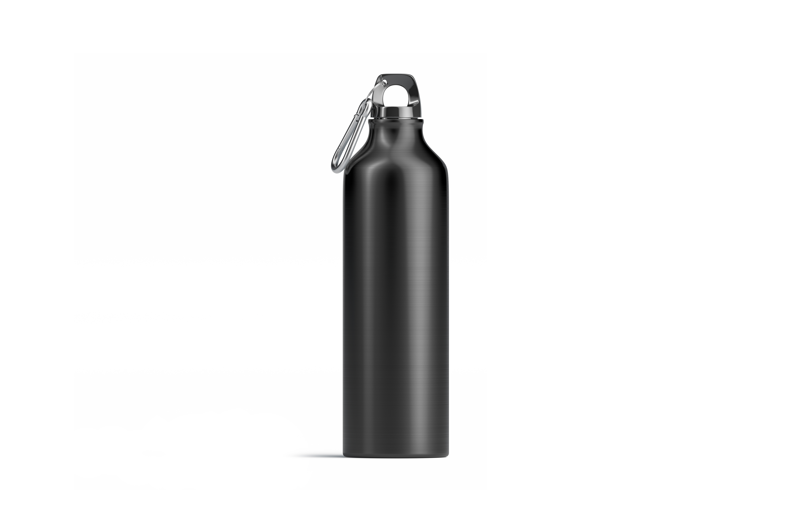

Case Study
-
Test Image -

Output on Wolfram Project - Watch
Output on Mobilenet Model - Wall Clock
Result -
Wolfram Project Is More Accurate
- Test Image - 
Output on Wolfram Project - Tableware
Output on Mobilenet Model - Spotlight
Result -
Wolfram Project Is More Accurate
- Test Image -
Output on Wolfram Project - Bowling Shoes
Output on Mobilenet Model - Shovel
Result -
MobileNet Model Is More Accurate
- Test Image -
Output on Wolfram Project - Box
Output on Mobilenet Model - Digital Clock
Result -
Wolfram Project Is More Accurate
- Test Image -
Output on Wolfram Project - Earphones
Output on Mobilenet Model - Microphones
Result -
Wolfram Project Is More Accurate
I have tested 5 images
MobileNet has predicted 1 of them correctly.
And Wolfram Project has predicted 4 of correctly.
So according to my case study Wolfram Project is more Accurate